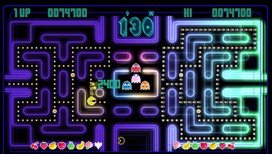

Then vs Now
When someone talks about Pacman today, everyone knows that this yellow circle is meant where a piece is missing.
In the past, it was not a yellow circle but a white one. Also, because the resolution wasn’t as good as it is now,
in the old version everything looked a little bit edgy and not as colorful as today, but it was still one of the
most popular games back then. Nowadays with today‘s technology, the game is much more elaborated, so you have way
better shapes and you don’t see the pixels as strong anymore. For example you can see two pictures one from the
old Version and one from the new Version. Also there are a lot more than two Versions existing for example the
Championship edition or the “Ms. Pacman” edition.

Championship Edition
The championship Version was especially designed for the Event and you only was able to play it while the
championship, as a participant. The design for the championship was a highlight of Pacman because it was very
special. It looked more colorful because it had very bright and a lot of different colors, instead of the normal
blue or red lines as walls. Also when your Pacman has eaten all dots on one half there will pop up a special item
on the other half, so you have to eat this item, to get dots on the other half again. Because of that you could
score until it is too fats and you die.
Now you can’t play this version anymore, you only can play the original or the “Ms. Pacman”.

"Ms. Pacman" Edition
Here is a comparison between the two most popular versions. The original Pacman version and the Ms. Pacman version.
The first thing you will see, is that the yellow circle now has a red bow and a kiss mouth. In contrast to the
original version, Ms. Pacman has four different labyrinths, which are displayed in different colors, and the walls
are also filled with color instead of just having a border. In addition, the fruits not only appear at certain
places, but are found at random on the whole field, as they change their position. The music and sound effects were
also changed.